History Museum
Skip the queue. Keep the wonder.
Designing a museum companion app that carries visitors from “should we go?” to “remember when we went?” — queues, maps, language barriers and all.
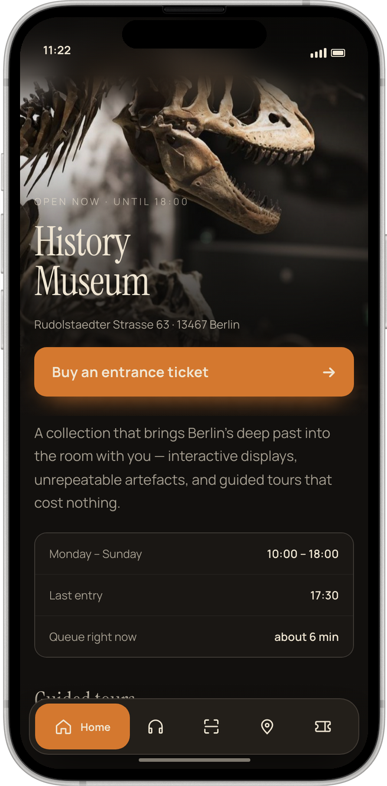
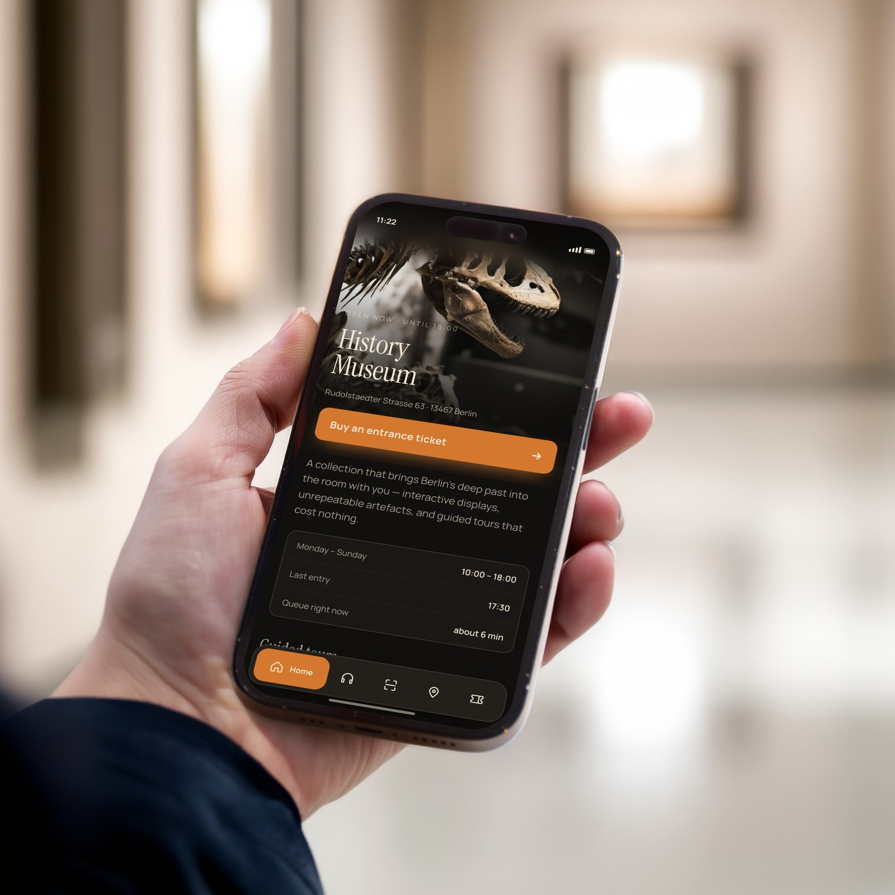
Full of wonder. Impossible to get into.
Early in our research we interviewed Luis — 27, furniture designer, the kind of person who plans his trips around museums. He told us about visiting three museums in Rotterdam in two days. At one, he stood in line for an hour just to buy a ticket. No timed slots. No indication of whether he'd even get in.
“I waited an hour just to get tickets — and only then realised I should have booked beforehand. Nothing told me that.”
Luis, user interviewThat story became the shorthand for our whole project. Museums are full of wonder. Getting into them — and around them — is not.
One constraint shaped everything: it had to work for everyone.
Our client, a natural history museum, wanted to digitise all of its visitor services. The brief came with one constraint that shaped everything after it: the product had to work for everyone — including visitors with vision, hearing, mobility, and language barriers. As a team of four, we started with a Lean UX Canvas to align on the business problem before touching pixels.
- Which museum services can be digitised — and do they lose their magic when they are?
- What are visitors actually looking for in a museum's digital services?
- How do we measure success?
- Growth in online ticket sales.
- App adoption in the first three months.
- Returning virtual visitors.
21 survey respondents. Three museums benchmarked.
We ran a screening survey to recruit, held in-depth interviews, and sent a 13-question survey — Digital Museum Experience — through our networks (21 respondents). In parallel we benchmarked three museums' digital ecosystems: MNAC (Barcelona), Technikmuseum Berlin, and The Met.
Although most respondents had experienced museum-app frustration, not a single one used a museum app regularly — the problem wasn't only quality, it was adoption.
- Before the visit — confusing websites, information scattered across platforms.
- At the entrance — long queues, sold-out surprises, uncertainty about entry.
- Inside — getting lost, overcrowded rooms, text panels that say too little.
Getting around inside was open territory.
Even the strongest digital ecosystem we benchmarked left gaps — exactly where our research said visitors hurt the most. Nobody fully owned “getting around inside”: indoor navigation and hands-free guidance were open territory.
Design for the visitor the building forgot.
Luis, 27
Furniture designer · Munich area
“I want to visit museums spontaneously — but buying tickets and finding information should be quick and simple.”
Sam, 25
IT student · Germany
“Without a digital overview, it's hard to know what the museum actually offers.”
Mei, 65
Retired · travelling from China
“I want to feel curious and welcome — not lost because I can't understand the language.”
| Stage | Where it breaks |
|---|---|
| Discover | Friends & social media — rarely the museum's own channels. |
| Plan | Scattered info, unclear hours, no previews. |
| Enter | Queues, sold-out slots, untranslated signage. |
| Explore | No orientation, crowded rooms, thin context. |
| Remember | No way to revisit, share, or keep learning. |
How might we design a mobile-first companion that makes planning, entering, and exploring a museum effortless — for every visitor, including those the building was never built for?
Protecting the core from our own enthusiasm.
Four designers brainstorming “how do we convince people to use a museum app?” produces a delightful mess — AI chatbots, achievement badges, art archives, in-app communities. We ran everything through a value-vs-effort matrix, then MoSCoW.
- Tickets with timed entry & QR; wallet integration.
- Interactive indoor map.
- Multilingual audio guides; subtitles & transcripts.
- QR scan → artefact info; text scaling & contrast.
- Smart route suggestions; estimated waiting times.
- Offline mode; ticket on smartwatch.
- Café & shop navigation.
- Could: AI assistant, gamified collecting, camera recognition, curated tours, social sharing.
- Won't: AR exhibit overlays, 3D object visualisation.
We explored a smartwatch companion — haptic navigation, ticket on your wrist, silent vibration alerts. The phone was the primary device, but for visitors with hearing impairments, hands-free, vibration-based guidance isn't a gadget, it's access. We kept the watch as a concept extension and let the phone carry the core journey.
A museum in your pocket.
We mapped task flows for the three jobs users hire the app for — book a ticket, change the language, learn about the thing in front of you — then moved through lo-fi and mid-fi wireframes into a high-fidelity prototype.
Setting the tone.
Before touching the interface, we gathered the world the app should live in — the texture, drama, and mood of the collection itself, from ancient artefacts to the museum's own spaces.
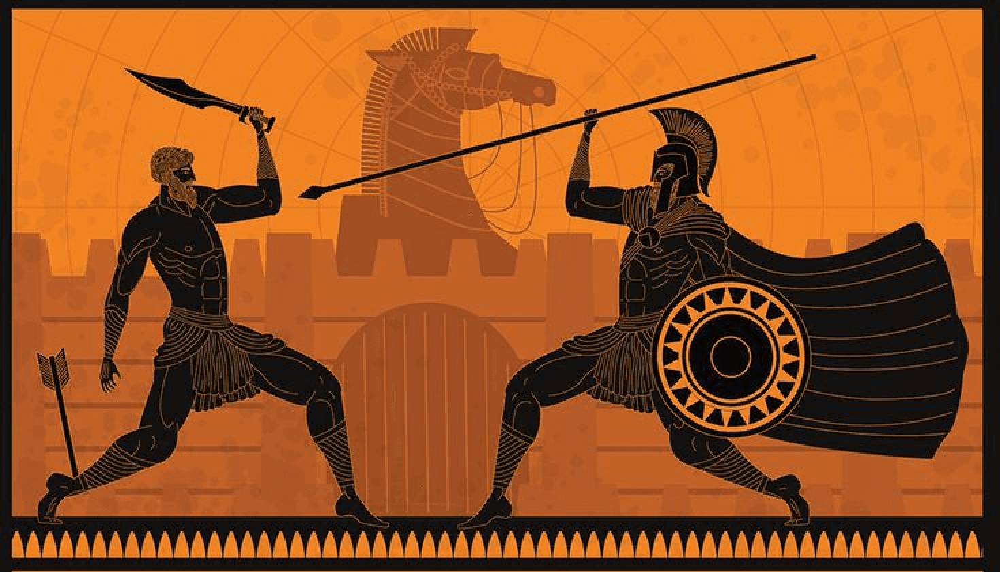
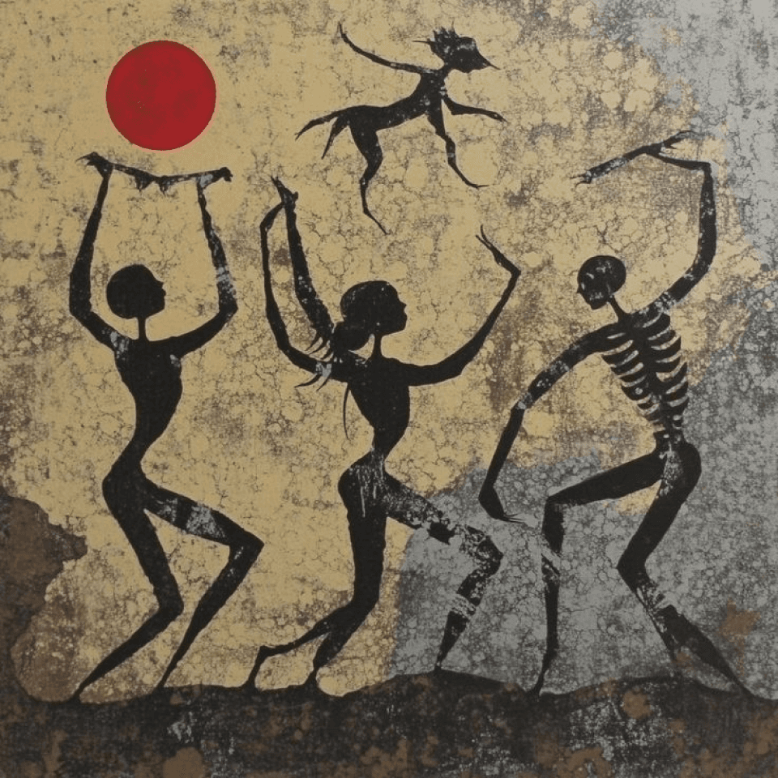
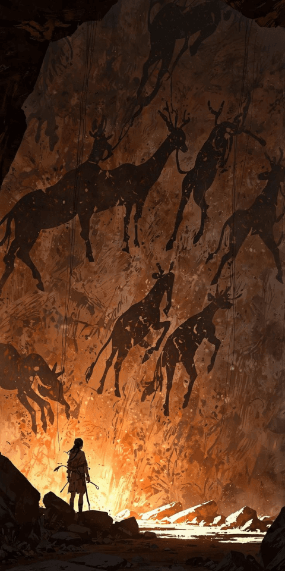
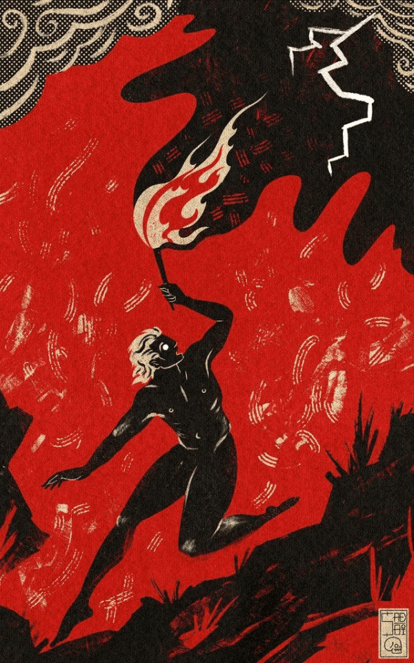
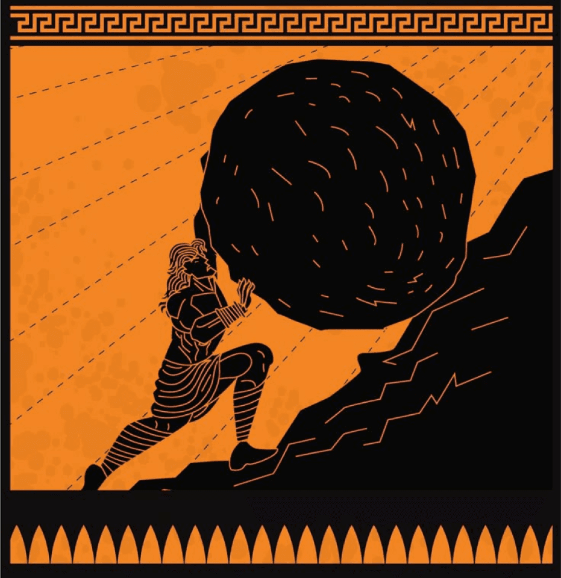
Dug from the collection.
From that moodboard, a palette: Obsidian for ink, Parchment for surfaces, Amber as the wayfinding accent, Crimson for alerts and support. Type is set in Inter on a strict 16-point grid — quiet enough to let dinosaurs do the talking.
Onboarding that asks, not assumes.
Accessibility isn't a settings page you find on day three. The first run asks for your language — including British Sign Language — lets you set font size with a live slider, and choose light, dark, or auto appearance. Mei is welcomed before she ever reaches a ticket counter.
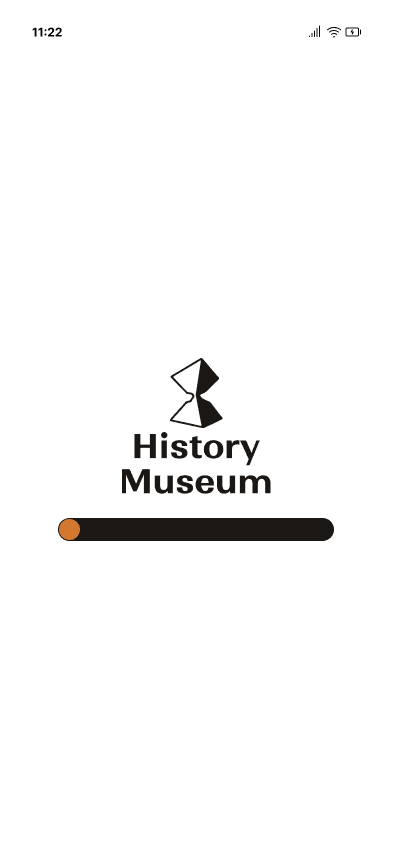
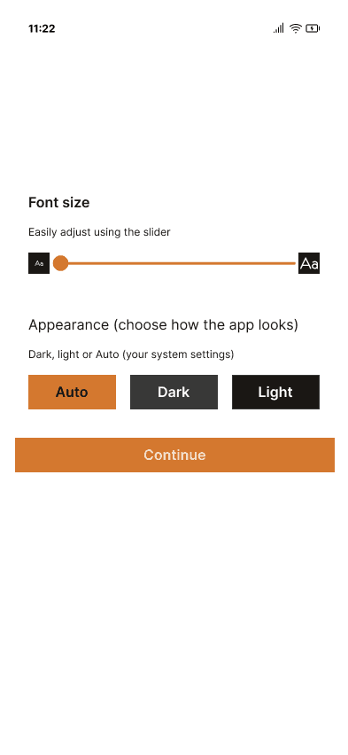
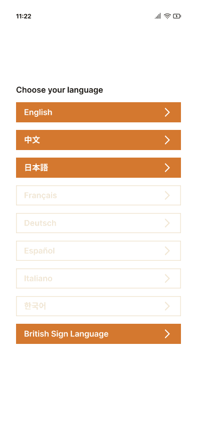
Onboarding screens — language choice (incl. British Sign Language), live font-size slider, and appearance.
Ticketing without the queue.
Date, time slot, visitor count — then a detail we're proud of: you choose a starting tour and gate. Full gates are marked, so crowds distribute themselves before anyone arrives. Each ticket can add a free locker and accessibility accommodations, and ends in a QR ticket that lives in the app, your wallet, or your email — Luis's Rotterdam hour, deleted.
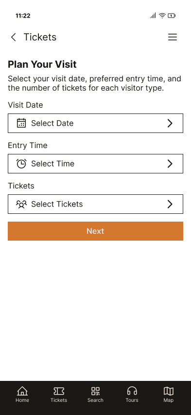
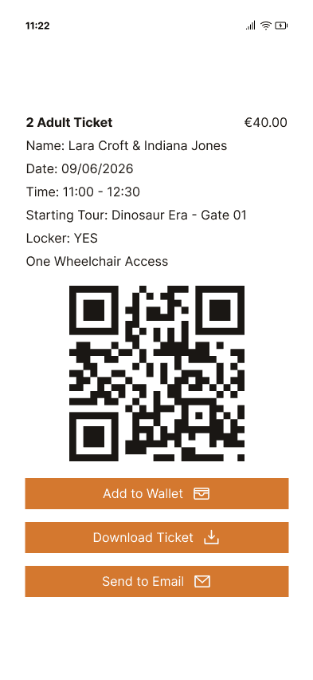
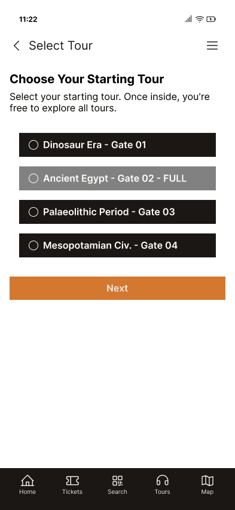
Ticketing screens — date & time slot, gate choice with full gates marked, and the final QR ticket.
Find it and hear it.
The interactive floor map shows every level, numbers every artefact, and marks overcrowded areas in real time — so “let's skip that room for now” becomes a one-glance decision. Reach the thing you came for, scan its QR code — or type its number if the crowd beat you to it — and it opens with an audio guide, origin story, and deeper reading. Curated tours like Dinosaur Era (4 stops, 45 minutes) chain it all into a narrative.
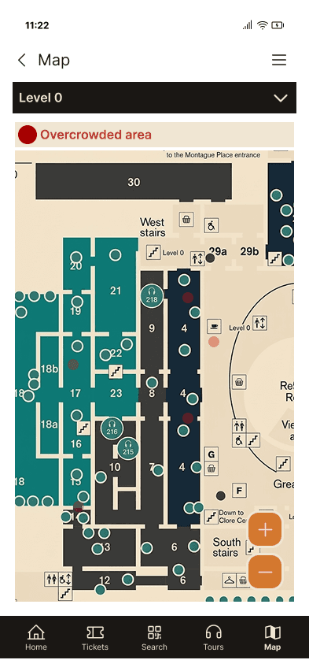
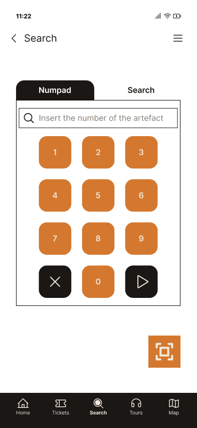
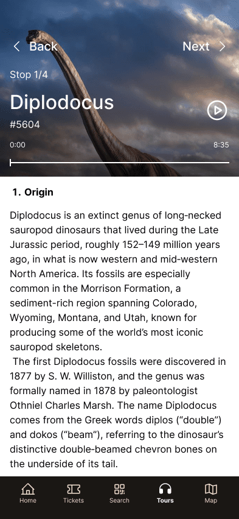
Wayfinding screens — the live floor map, an artefact opened with its audio guide, and a curated tour.
We knew things the interface never said out loud.
We ran a moderated usability test of the prototype — and the polite version is that reality gave us notes. Every fix folded back into the final, end-to-end prototype.
| What testing revealed | The fix |
|---|---|
| Prices on recommendation cards made free tours look paid. | “Free with your ticket” labels wherever a tour appears; prices removed from tour cards. |
| The download-ticket button sat below the fold — users weren't sure the ticket saved. | Primary actions moved up; explicit “your ticket has been added” confirmation. |
| Dropdowns for simple yes/no questions (locker, special needs) felt heavy. | Replaced with radio buttons — one glance, one tap. |
| The artefact-code icon read as “calculator”; small unlabeled controls confused people. | Explanatory text on the scanner; larger play button; “Next / Previous” labels. |
| Post-tour shop coupons felt like aggressive selling at a reflective moment. | Recommendations toned down and clarified — what the discount is, and that it's optional. |
Accessibility first is cheaper than accessibility later.
- Research beats opinions. Half our brainstorm didn't survive contact with the survey.
- Accessibility first is cheaper. Designing for Mei made the app calmer for everyone.
- Even one usability test pays for itself. A single session surfaced five issues.
- Four designers need one vocabulary. Lean UX Canvas and MoSCoW kept us one team.
- Testing with visitors who have accessibility needs.
- Prototyping the smartwatch companion's haptic navigation.
- Virtual tours for remote visitors.
- A gamified “collect the collection” mode for younger explorers.
What started as a project about digitising a museum turned into a project about hospitality — people don't skip museums because they dislike culture, but because the visit makes them feel like outsiders. History Museum treats every visitor like the museum was built for them.
The wonder was never the problem.From the first language choice to the last artefact.
Every fix from testing folded back into the design — this walkthrough shows the final prototype end to end, through the Dinosaur Era tour.
Prototype recording — language onboarding, a timed ticket, and the Dinosaur Era tour. Plays silently.